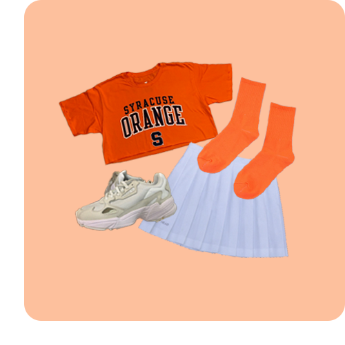
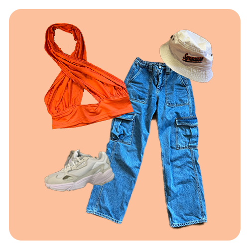
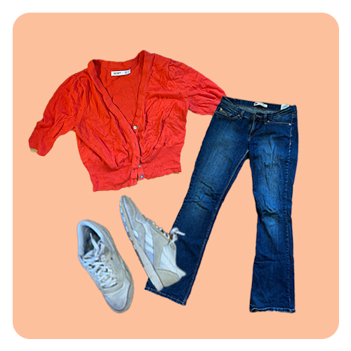
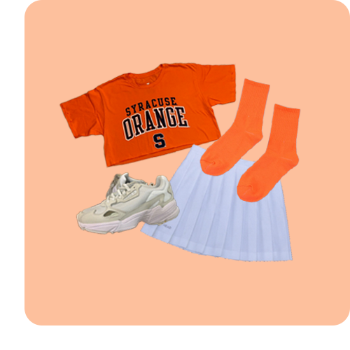
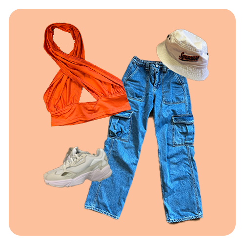
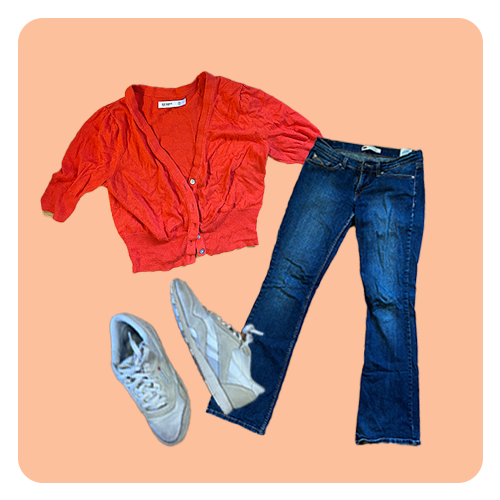

ABOUT ME
Hi! My name is Lang and I'm a sophomore studying Advertising at Syracuse University. I'm passionate about style and would love to work somewhere in the fashion industry one day. Most of my clothes are thrifted, but I love stores like Urban Outfitters, Princess Polly, Motel Rocks, and my friends' closets.
 




